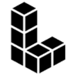

A
AIGIFYГенерация и редактирование изображений
Для «AIGIFY» сначала определите свою задачу и требуемый результат. Карточка относится к направлению «Генерация и редактирование изображений».
Раздел «Генерация и редактирование изображений»: варианты ИИ для этой задачи, описания возможностей и переходы к обзорам.
Подготовьте вариант собственного предметного снимка с другим окружением. Опишите поверхность и свет, а свойства изделия оставьте неизменными; сравните края, пропорции и контактную тень, чтобы оформление не добавляло новых элементов конструкции и не меняло цвет товара.
Помести мою настольную лампу на светлый деревянный стол у спокойной стены. Сохрани форму основания, выключатель и цвет корпуса; согласуй тень с мягким светом слева, новых деталей не добавляй.

Для «AIGIFY» сначала определите свою задачу и требуемый результат. Карточка относится к направлению «Генерация и редактирование изображений».
Для «AIImageUpscale.com» сначала определите свою задачу и требуемый результат. Карточка относится к направлению «Генерация и редактирование изображений».

Aitubo создаёт изображения из эскизов с помощью ИИ, включая игровые материалы и фотографии. В продукте также представлены мультяшные визуальные варианты. Редактор позволяет изменять созданные изображения и уточнять художественные ресурсы, связывая генерацию и дальнейшую обработку в одном процессе.
«Atlas (atlas.design)» подготавливает трёхмерные объекты.
«Avatic» представлен в разделе «Генерация и редактирование изображений». При выборе проверьте нужную операцию и условия работы с результатом.
«AVIF to PNG Converter» представлен в разделе «Генерация и редактирование изображений». При выборе проверьте нужную операцию и условия работы с результатом.
«Beard Style AI» представлен в разделе «Генерация изображений». При выборе проверьте нужную операцию и условия работы с результатом.
«BeautyPlus» помогает исправлять и оформлять фотографии.
«BrideLook AI» представлен в разделе «Генерация и редактирование изображений». При выборе проверьте нужную операцию и условия работы с результатом.
«Charm Shot AI» представлен в разделе «Генерация и редактирование изображений». При выборе проверьте нужную операцию и условия работы с результатом.

Civitai объединяет материалы сообщества для визуальной генерации. Перед применением в проекте стоит изучить назначение модели и условия использования результата.
Сравнивать «CrayEye» с другими инструментами раздела «Генерация и редактирование изображений» удобнее на одинаковом исходном материале.
«Dallelist» готовит визуальные материалы по заданию.
«Digard365» готовит визуальные материалы по заданию.
Для «Dopepics» сначала определите свою задачу и требуемый результат. Карточка относится к направлению «Изображения».
Сравнивать «Dr. Watermark» с другими инструментами раздела «Генерация и редактирование изображений» удобнее на одинаковом исходном материале.
Для «Eye Shape AI» сначала определите свою задачу и требуемый результат. Карточка относится к направлению «Генерация и редактирование изображений».
«EyeQ | Creators of Perfectly Clear» представлен в разделе «Генерация и редактирование изображений». При выборе проверьте нужную операцию и условия работы с результатом.
Для «Face to All (facetoall.com)» сначала определите свою задачу и требуемый результат. Карточка относится к направлению «Генерация и редактирование изображений».
«Faceswap.tech» меняет лицо в визуальном материале.
«FamousFace.app» представлен в разделе «Генерация и редактирование изображений». При выборе проверьте нужную операцию и условия работы с результатом.
Flush AI предлагает облачную творческую среду с генеративными моделями для изображений и письменных задач. В исходном описании также отмечено улучшение визуального материала. Перед выбором режима выясните, какая операция доступна для вашего исходника, и сравните обработанный фрагмент с оригиналом по деталям, которые требуется сохранить.
«Gigapixel AI» увеличивает изображения для дальнейшей обработки.
Сравнивать «GreenEyes.AI : Computer Vision APIs and Products : GreenEyes Artificial Intelligence Services, LLC.» с другими инструментами раздела «Генерация и редактирование изображений» удобнее на одинаковом исходном материале.
Для «IDjpg» сначала определите свою задачу и требуемый результат. Карточка относится к направлению «Генерация и редактирование изображений».
«Image AI Generator» представлен в разделе «Генерация и редактирование изображений». При выборе проверьте нужную операцию и условия работы с результатом.
Сравнивать «Image to Prompt AI» с другими инструментами раздела «Генерация и редактирование изображений» удобнее на одинаковом исходном материале.
Для «Imaginebuddy» сначала определите свою задачу и требуемый результат. Карточка относится к направлению «Генерация и редактирование изображений».
«Imaiger» готовит визуальные материалы по заданию.
«Indian Wedding AI» представлен в разделе «Генерация и редактирование изображений». При выборе проверьте нужную операцию и условия работы с результатом.
Сравнивать «jpgHi» с другими инструментами раздела «Генерация и редактирование изображений» удобнее на одинаковом исходном материале.
«Kit4AI» готовит визуальные материалы по заданию.

Kling AI создаёт видео и изображения по описанию и исходным кадрам. Для коротких сцен полезно заранее определить действие, движение камеры и признаки, которые должны сохраняться.

LandingAI используют для задачи: связывать действия в автоматизированный процесс. Ещё одно направление работы: разбирать содержимое документов.
LogoMakerr AI помогает создавать логотипы, используя шаблоны, шрифты, цвета, символы и разные компоновки. Сервис ориентирован на оформление бренда или компании. Для выбранного варианта проверьте читаемость в небольшом размере и применимость на светлом и тёмном фоне, затем отдельно уточните доступный формат и условия использования результата.
«MeBoom.ai» создаёт портретные и аватарные изображения.
«mock.club» представлен в разделе «Генерация и редактирование изображений». При выборе проверьте нужную операцию и условия работы с результатом.
Сравнивать «NewProfilePic App» с другими инструментами раздела «Редактировать изображение» удобнее на одинаковом исходном материале.
Сравнивать «Pablooo.club» с другими инструментами раздела «Генерация и редактирование изображений» удобнее на одинаковом исходном материале.
Сравнивать «Passport Photo Maker» с другими инструментами раздела «Генерация и редактирование изображений» удобнее на одинаковом исходном материале.
Сравнивать «Perfect365 AI Makeup App» с другими инструментами раздела «Генерация и редактирование изображений» удобнее на одинаковом исходном материале.
«Phosum» выделяет основные положения материала.
PhotoEnhanceAI обрабатывает фотографии с помощью ИИ, включая масштабирование и восстановление лица. В наборе есть удаление окружения, объектов и царапин, а также работа с ночными снимками. Продукт связывает коррекцию качества с очисткой изображения, позволяя рассматривать повреждения исходника и лишние элементы кадра как разные задачи обработки.
Для «PhotoG» сначала определите свою задачу и требуемый результат. Карточка относится к направлению «Генерация и редактирование изображений».
«PhotogenicAI» представлен в разделе «Генерация и редактирование изображений». При выборе проверьте нужную операцию и условия работы с результатом.
«Picarta» представлен в разделе «Генерация и редактирование изображений». При выборе проверьте нужную операцию и условия работы с результатом.
«PicGenie» готовит визуальные материалы по заданию.
Для «Picsi AI» сначала определите свою задачу и требуемый результат. Карточка относится к направлению «Аватары».
Страница 16 из 22